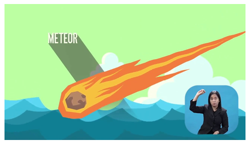

Menurut BNPB (2017), secara etimologi kata tsunami berasal dari bahasa Jepang yaitu dari kata "tsu" (lautan) dan "nami" (gelombang ombak) sehingga tsunami dapat diartikan sebagai serangkaian gelombang ombak laut raksasa yang terjadi karena adanya pergeseran di dasar laut akibat gempa bumi.
Menurut Kementerian Energi dan Sumber Daya Mineral Republik Indonesia, tsunami dapat dipicu oleh:
1. Gempa Bumi di Dasar Laut
2. Tanah Longsor di Dasar Laut
3. Letusan Gunung Api Bawah Laut
4. Akibat Jatuhnya Meteor (Jarang Terjadi)
Menurut Buku Saku BNPB “Tanggap Tangkas Tangguh Menghadapi Bencana” (2017), ada beberapa hal yang perlu dilakukan apabila terjadi tsunami, yaitu:
Badan Nasional Penaggulangan Bencana. (2017). Buku Saku Tanggap Tangkas Tangguh Menghadapi Bencana. Diakses dari https://siaga.bnpb.go.id/hkb/po-content/uploads/documents/Buku_Saku-10Jan18_FA.pdf pada 25 Juni 2021 pukul 22.00
Badan Nasional Penaggulangan Bencana. (2017). Definisi Bencana. Diakses dari https://bnpb.go.id/definisi-bencana pada 25 Juni pukul 21.30
Badan Nasional Penaggulangan Bencana. (2017). Buku Saku Tanggap Tangkas Tangguh Menghadapi Bencana. Diakses dari https://siaga.bnpb.go.id/hkb/po-content/uploads/documents/Buku_Saku-10Jan18_FA.pdf pada 25 Juni 2021 pukul 22.00